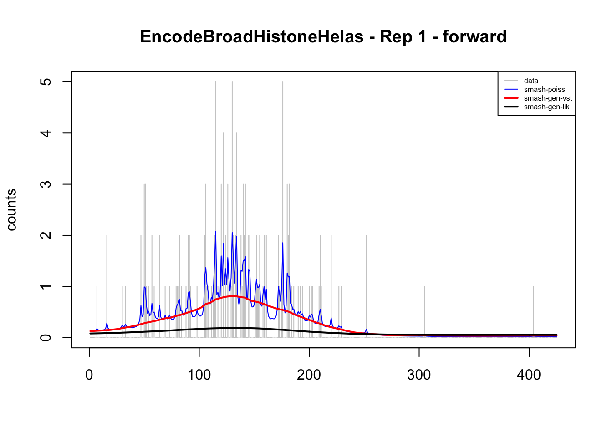
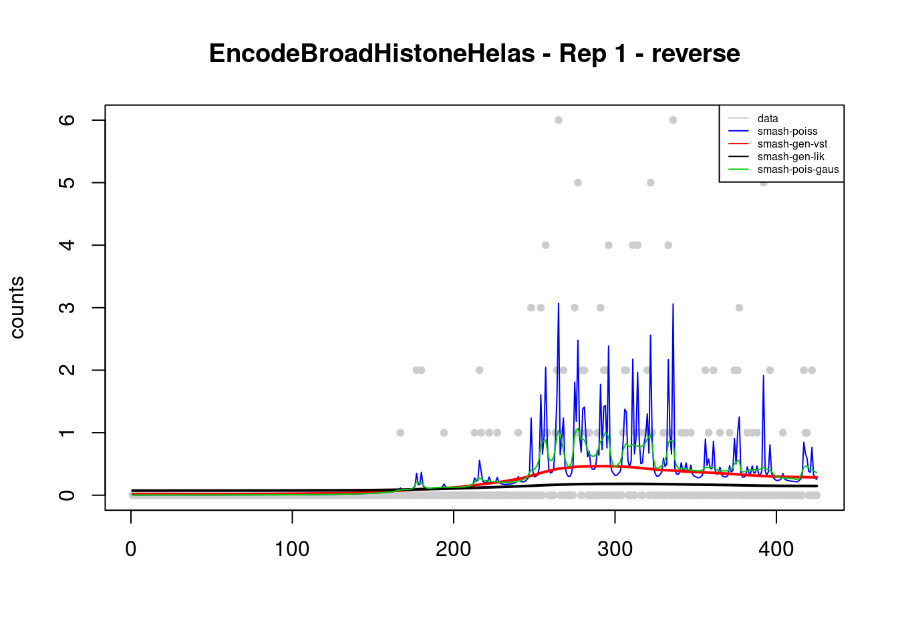
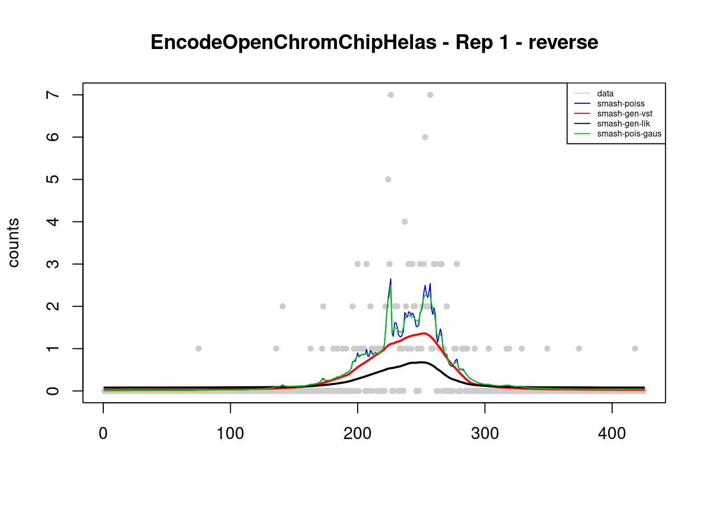
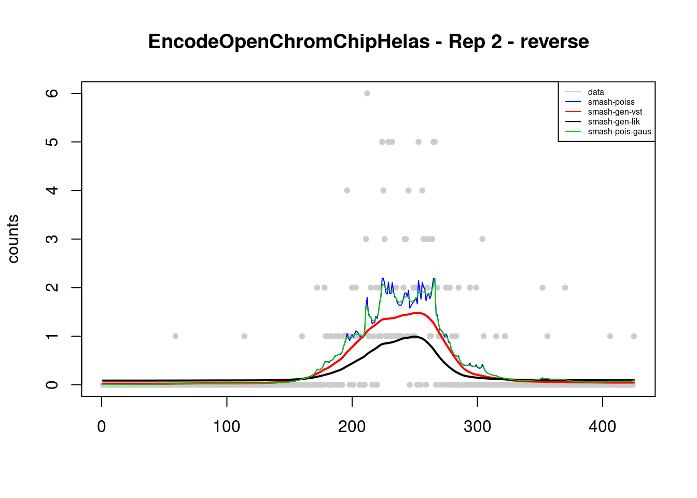

Last updated: 2020-09-08
Checks: 7 0
Knit directory: smash-gen/
This reproducible R Markdown analysis was created with workflowr (version 1.5.0). The Checks tab describes the reproducibility checks that were applied when the results were created. The Past versions tab lists the development history.
Great! Since the R Markdown file has been committed to the Git repository, you know the exact version of the code that produced these results.
Great job! The global environment was empty. Objects defined in the global environment can affect the analysis in your R Markdown file in unknown ways. For reproduciblity it’s best to always run the code in an empty environment.
The command set.seed(20180501) was run prior to running the code in the R Markdown file. Setting a seed ensures that any results that rely on randomness, e.g. subsampling or permutations, are reproducible.
Great job! Recording the operating system, R version, and package versions is critical for reproducibility.
Nice! There were no cached chunks for this analysis, so you can be confident that you successfully produced the results during this run.
Great job! Using relative paths to the files within your workflowr project makes it easier to run your code on other machines.
Great! You are using Git for version control. Tracking code development and connecting the code version to the results is critical for reproducibility. The version displayed above was the version of the Git repository at the time these results were generated.
Note that you need to be careful to ensure that all relevant files for the analysis have been committed to Git prior to generating the results (you can use wflow_publish or wflow_git_commit). workflowr only checks the R Markdown file, but you know if there are other scripts or data files that it depends on. Below is the status of the Git repository when the results were generated:
Ignored files:
Ignored: .DS_Store
Ignored: .Rhistory
Ignored: .Rproj.user/
Ignored: analysis/figure/
Ignored: data/.DS_Store
Untracked files:
Untracked: analysis/pln_smooth.Rmd
Untracked: analysis/smashadditive.Rmd
Untracked: analysis/talk1011.Rmd
Untracked: analysis/vstlikcompare.Rmd
Untracked: talk.Rmd
Untracked: talk.html
Untracked: talk.pdf
Unstaged changes:
Modified: analysis/binomial.Rmd
Deleted: analysis/chipexocut.Rmd
Modified: analysis/chipseqref.Rmd
Modified: analysis/fda.Rmd
Modified: analysis/index.Rmd
Modified: analysis/protein.Rmd
Modified: analysis/r2.Rmd
Modified: analysis/sigma.Rmd
Note that any generated files, e.g. HTML, png, CSS, etc., are not included in this status report because it is ok for generated content to have uncommitted changes.
These are the previous versions of the R Markdown and HTML files. If you’ve configured a remote Git repository (see ?wflow_git_remote), click on the hyperlinks in the table below to view them.
| File | Version | Author | Date | Message |
|---|---|---|---|---|
| Rmd | d3b6815 | Dongyue Xie | 2020-09-08 | wflow_publish(“analysis/chipexo.Rmd”) |
| html | 65bf7cd | Dongyue Xie | 2020-09-08 | Build site. |
| Rmd | 0d33dfa | Dongyue Xie | 2020-09-08 | wflow_publish(“analysis/chipexo.Rmd”) |
| html | a1b44cb | Dongyue | 2018-06-04 | chip exo data analysis |
| Rmd | f000105 | Dongyue | 2018-06-04 | chip exo data analysis |
The lenght of sequence here is 425, which is not a power of 2 hence causing problem when using smashgen. In this real data analysis, we reflect the data then apply smashgen to the augmented data.
library(smashrgen)
library(dashr)
extract_counts_CTCF <- function(filename){
bed_counts <- read.table(filename, header = F, stringsAsFactors = F)
colnames(bed_counts) <- c("chr", "start", "end", "name", "width", "counts")
counts <- strsplit(bed_counts$counts, split = ",")[[1]]
counts[counts == "NA"] <- 0
counts <- as.numeric(counts)
return(counts.l = list(chr = bed_counts$chr, start = bed_counts$start, end = bed_counts$end, counts = counts))
}
real_study = function(file.name,plot.name){
chipexo1 <- extract_counts_CTCF(file.name)
print(paste("proportion of 0s:", round(sum(chipexo1$counts==0)/length(chipexo1$counts),2)))
#dash.out=dash_smooth(chipexo1$counts, dash_control = list(Inf_weight = 1), progressbar = FALSE)
smash.out=smash.poiss(chipexo1$counts)
#y=reflect(chipexo1$counts,'both',c(300,299))
smashgen.vst.out=smash.gen.poiss(chipexo1$counts,method = 'smash',transformation = 'vst')
smashgen.lik.out=smash.gen.poiss(chipexo1$counts,method = 'smash',
transformation = 'lik_expansion',ash.pm = TRUE)
plot(chipexo1$counts, col = "gray80", type = "h", ylab = "counts", xlab = "", main = plot.name)
lines(smash.out, col = "blue", lwd = 1)
#lines(dash.out$estimate, col = "red", lwd = 1)
lines(smashgen.vst.out$lambda.est,col="red",lwd=2)
lines(smashgen.lik.out$lambda.est,col='black',lwd=2)
legend("topright", # places a legend at the appropriate place
c("data","smash-poiss",'smash-gen-vst','smash-gen-lik'), # puts text in the legend
lty=c(1,1,1,1), # gives the legend appropriate symbols (lines)
lwd=c(1,1,2,2),
cex = 0.5,
col=c("gray80","blue", "red",'black'))
print(paste("nugget effect estimated by vst:",round(smashgen.vst.out$nugget.est,2)))
print(paste("nugget effect estimated by lik_expansion:",round(smashgen.lik.out$nugget.est,2)))
}file.name = "data/chipexo_examples/example_CTCF_MACE_wgEncodeBroadHistoneHelas3CtcfStdAlnRep1_forward_counts.txt"
real_study(file.name,plot.name = "EncodeBroadHistoneHelas - Rep 1 - forward")[1] "proportion of 0s: 0.81"
[1] "nugget effect estimated by vst: 0.02"
[1] "nugget effect estimated by lik_expansion: 0"file.name = "data/chipexo_examples/example_CTCF_MACE_wgEncodeBroadHistoneHelas3CtcfStdAlnRep1_reverse_counts.txt"
real_study(file.name,plot.name = "EncodeBroadHistoneHelas - Rep 1 - reverse")[1] "proportion of 0s: 0.84"
[1] "nugget effect estimated by vst: 0.01"
[1] "nugget effect estimated by lik_expansion: 2.93"file.name = "data/chipexo_examples/example_CTCF_MACE_wgEncodeOpenChromChipHelas3CtcfAlnRep1_forward_counts.txt"
real_study(file.name,plot.name = "EncodeOpenChromChipHelas - Rep 1 - Forward")[1] "proportion of 0s: 0.83"
[1] "nugget effect estimated by vst: 0.02"
[1] "nugget effect estimated by lik_expansion: 0"file.name = "data/chipexo_examples/example_CTCF_MACE_wgEncodeOpenChromChipHelas3CtcfAlnRep1_reverse_counts.txt"
real_study(file.name,plot.name = "EncodeOpenChromChipHelas - Rep 1 - reverse")[1] "proportion of 0s: 0.81"
[1] "nugget effect estimated by vst: 0.02"
[1] "nugget effect estimated by lik_expansion: 0"##Forward
file.name = 'data/chipexo_examples/example_CTCF_MACE_wgEncodeOpenChromChipHelas3CtcfAlnRep2_forward_counts.txt'
real_study(file.name,plot.name = "EncodeOpenChromChipHelas - Rep 2 - Forward")[1] "proportion of 0s: 0.79"
[1] "nugget effect estimated by vst: 0.02"
[1] "nugget effect estimated by lik_expansion: 1.21"file.name = "data/chipexo_examples/example_CTCF_MACE_wgEncodeOpenChromChipHelas3CtcfAlnRep2_reverse_counts.txt"
real_study(file.name,plot.name = "EncodeOpenChromChipHelas - Rep 2 - reverse")[1] "proportion of 0s: 0.78"
[1] "nugget effect estimated by vst: 0.02"
[1] "nugget effect estimated by lik_expansion: 1"
sessionInfo()R version 3.6.1 (2019-07-05)
Platform: x86_64-apple-darwin15.6.0 (64-bit)
Running under: macOS High Sierra 10.13.6
Matrix products: default
BLAS: /Library/Frameworks/R.framework/Versions/3.6/Resources/lib/libRblas.0.dylib
LAPACK: /Library/Frameworks/R.framework/Versions/3.6/Resources/lib/libRlapack.dylib
locale:
[1] en_US.UTF-8/en_US.UTF-8/en_US.UTF-8/C/en_US.UTF-8/en_US.UTF-8
attached base packages:
[1] stats graphics grDevices utils datasets methods base
other attached packages:
[1] dashr_0.99.0 inline_0.3.15 Rcpp_1.0.2 smashrgen_0.1.4
[5] wavethresh_4.6.8 MASS_7.3-51.4 caTools_1.17.1.2 ashr_2.2-38
[9] smashr_1.2-7
loaded via a namespace (and not attached):
[1] compiler_3.6.1 later_1.0.0 git2r_0.26.1
[4] workflowr_1.5.0 bitops_1.0-6 iterators_1.0.12
[7] tools_3.6.1 digest_0.6.21 evaluate_0.14
[10] lattice_0.20-38 rlang_0.4.5 Matrix_1.2-17
[13] foreach_1.4.7 yaml_2.2.0 parallel_3.6.1
[16] xfun_0.10 stringr_1.4.0 knitr_1.25
[19] fs_1.3.1 rprojroot_1.3-2 grid_3.6.1
[22] data.table_1.12.6 glue_1.3.1 R6_2.4.0
[25] rmarkdown_1.16 mixsqp_0.1-97 magrittr_1.5
[28] whisker_0.4 backports_1.1.5 promises_1.1.0
[31] codetools_0.2-16 htmltools_0.4.0 httpuv_1.5.2
[34] stringi_1.4.3 doParallel_1.0.15 pscl_1.5.2
[37] truncnorm_1.0-8 SQUAREM_2017.10-1